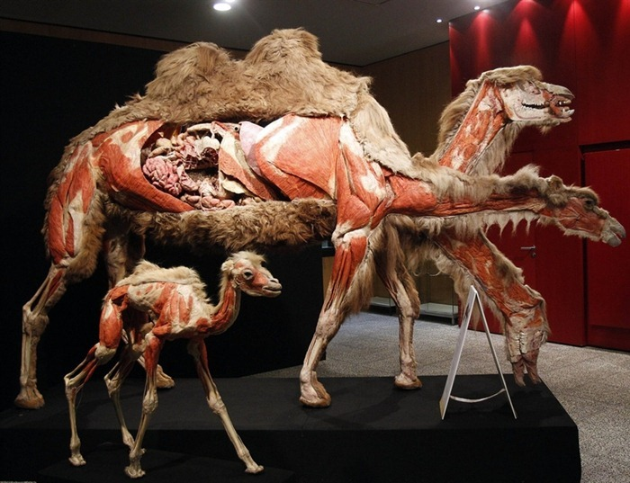

Overview
The paper “Engaging with Plastination and the ‘Body Worlds’ Phenomenon” co – authored by D. Gareth Jones and Maja I. Whitaker delves deep into the intersection of science, art, and public engagement. The article analyses Gunther von Hagens’ plastination technique and his controversial “Body Worlds” exhibition, which showcases plastinated human bodies in various dynamic poses. As a student majoring in creative computing, this paper makes me ponder how to utilise innovative technologies to foster dialogue among education, ethics, and artistic expression.

Von Hagens’ work aims at the “democratization of anatomy”, making the human body structure more accessible to the general public. This coincides with my interest in designing interactive projects, that is, making complex concepts more intuitive and accessible through design. These exhibitions not only reveal the complexity of human anatomy but also break the norms of traditional cadaver display, bringing science from the laboratory into the public eye. This approach demonstrates the potential of creative visualization in education.
The paper describes “Body Worlds” as a combination of anatomy and art, where plastinated specimens are placed in dynamic, life – like scenes. While some consider it sensationalist, others see it as a celebration of the beauty of the human body. This duality reminds me of the challenge of balancing aesthetics and functionality in creative computing projects. The exhibition emphasises the importance of creating an experience that is both visually appealing and meaningful, which is exactly what I strive for in my own designs.
The paper raises important ethical issues regarding consent, the commodification of human remains, and the balance between education and entertainment. These issues remind me of the ethical dilemmas that may be encountered in creative computing, especially when dealing with sensitive topics or data. As a designer, I must prioritize transparency, respect for users, and a clear ethical framework to ensure that innovation does not come at the expense of dignity or responsibility.
The “Body Worlds” exhibition attracts audiences through its vivid and immersive display methods, demonstrating the power of engagement in education. The paper points out that many visitors have a deeper understanding of their own bodies and health after visiting the exhibition. This inspires me to think about how, through elements of interactivity and emotional resonance, my projects can foster deeper connections and leave a lasting impression.
“Engaging with Plastination and the ‘Body Worlds’ Phenomenon” offers a thought – provoking perspective, demonstrating how innovation can challenge norms and expand possibilities. It inspires me to consider how my creative computing projects can cross disciplinary boundaries, spark important discussions, and have a profound impact on the audience.